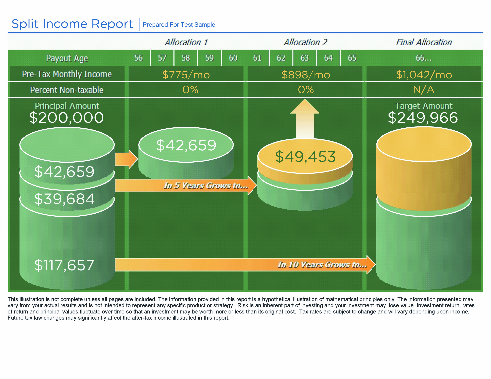

Federal retirement,
decoded.
A working session on FERS, TSP, FEHB, FEGLI, and Social Security — and the decisions that shape every federal retirement.
Federal benefits are generous — and complex.
Most federal employees retire with the wrong answer to at least one major question. The cost of that wrong answer is permanent.
Your FERS pension, FEHB, TSP, and survivor elections are decided once. Most are irreversible.
HR can process forms. They cannot tell you when, how, or whether your plan actually works.
Leave with a working understanding of your benefits — and a short list of next steps.
Education, knowledge, tactics.
- Full picture of your benefits
- Confidence at each stage of service
- Know your options now and later
- Understand how rules apply to you
- Reduce confusion — cut through noise
- Build a strategy, not a guess
- Take action with clear next steps
- Plan ahead — what to do, and when
- Stay aligned with your full plan
A working session, not a lecture.
Listen for what applies to you.
- Take notes on the rules that match your tier and dates
- Ask questions as they come up
- Leave with a short, written action list
Turn the action list into a plan.
Your next step is to request a complimentary Federal Benefit Comparison — a side-by-side review of your specific records, eligibility, and projections.
From paperwork to pension to the three-legged stool.
- eOPF · DD-214
- SF-50s
- Beneficiary forms
- Social Security statement
- FERS · FERS-RAE · FERS-FRAE
- 6c special provisions
- Contribution rates
- MRA & eligibility
- MRA+10 and postponed
- FEHB continuation
- VERA · VSIP · DRP
- RSCD & creditable service
- High-3 salary
- Standard & 6c formulas
- Survivor benefits
- FERS Supplement · Social Security
- TSP funds & L Funds
- FEHB & Medicare Part B
- FEGLI life insurance
Your records
and paperwork.
The benefits you've earned are only as good as the records that prove them. Start with the paper.
Documents to keep on file.
Pull these together early. Late paperwork is the most common cause of delayed pensions.
Proof of military service. Required for any military buy-back.
Official personnel records — your service history of record.
Benefit estimate at key ages. Pull from ssa.gov annually.
Court-order proof for survivor and pension actions.
SF-86 submission, clearance level, and date of last investigation.
Download your eOPF this week. Verify every SF-50 reflects the correct retirement plan code in Box 30.
Beneficiary forms — keep them current.
Review after marriage, divorce, births, or a death in the family. Outdated forms override your will.
Final pay, leave payout, and other compensation owed at separation or death.
Designates beneficiaries for your federal life insurance proceeds.
Beneficiary for any unreturned FERS retirement contributions.
Filed directly with TSP — separate from all other federal forms.
Your FERS
coverage.
Your hire date determines your tier. Your tier determines your contribution rate — but everyone earns the same pension.
Which FERS tier covers you?
Your tier is set by hire date — and it controls only how much you contribute, not what you earn.
| Tier | Who's covered | Employee contribution | FERS pension share |
|---|---|---|---|
| FERS | Hired after Jan 1, 1984 with <5 years service by Jan 1, 1987 | 7.0% of basic pay | 0.8% |
| FERS-RAE | Hired in calendar year 2013, <5 years prior federal service | 9.3% of basic pay | 3.1% |
| FERS-FRAE | Hired after Jan 1, 2014, <5 years prior federal service | 10.6% of basic pay | 4.4% |
All three tiers use the same FERS pension formula. Higher contributions in newer tiers do not buy a larger benefit — only Special Provisions (6c) coverage does.
FERS — how your contributions break down.
Hired after Jan 1, 1984 with less than 5 years of service by Jan 1, 1987. The government funds the rest of the annuity.
FERS-RAE — the 2013 tier.
Hired in calendar year 2013 with less than 5 years of prior federal service.
Higher employee contributions, same pension formula. The benefit you earn looks identical to standard FERS at retirement.
FERS-FRAE — the highest employee share.
Hired after Jan 1, 2014 with less than 5 years of prior federal service.
Higher contributions. Enhanced benefit.
For Law Enforcement Officers (LEO), Firefighters (FF), and Air Traffic Controllers (ATC) — and other 6c-covered roles.
| Tier | Total contribution | Social Security | FERS pension |
|---|---|---|---|
| FERS · 6c | 7.5% | 6.2% | 1.3% |
| FERS-RAE · 6c | 9.8% | 6.2% | 3.6% |
| FERS-FRAE · 6c | 11.1% | 6.2% | 4.9% |
Each tier contributes 0.5% more to FERS than its non-6c counterpart.
1.7% per year for the first 20 years of qualifying 6c service.
Mandatory retirement at age 57 (with limited extensions).
When you can
retire.
Three rules decide your earliest retirement date: minimum age, years of service, and what kind of retirement you elect.
FERS retirement eligibility.
Five years of creditable service is the floor. The combinations below set the immediate, unreduced retirement door.
| Path | Age | Service |
|---|---|---|
| MRA + 30 | MRA | 30 years |
| Age 60 + 20 | 60 | 20 years |
| Age 62 + 5 | 62 | 5 years |
| Path | Age | Service |
|---|---|---|
| Age 50 + 20 | 50 | 20 (6c) |
| Any age + 25 | Any | 25 (6c) |
| Mandatory | 57 | — |
Your MRA ranges from 55 to 57 depending on year of birth — covered next.
MRA depends on the year you were born.
| Year of Birth | Minimum Retirement Age |
|---|---|
| Before 1948 | 55 |
| 1948 – 1952 | 55 + 2 to 10 months |
| 1953 – 1964 | 56 |
| 1965 – 1969 | 56 + 2 to 10 months |
| 1970 or after | 57 |
Retire early — at a permanent cost.
MRA+10 lets you leave with as little as 10 years of service — but the pension takes a permanent reduction.
- You've reached your MRA
- 10+ years of creditable FERS service
- Less than 30 years of service
- 5/12 of 1% reduction per month under age 62
- That equals 5% per year, permanently
- Example: 4 years early = 20% reduction for life
A way to avoid the early-retirement penalty.
Leave at MRA+10 — but delay starting your pension. The penalty disappears.
- Separate at MRA + 10
- Delay pension start to age 60 or 62
- Pension begins unreduced
- Higher lifetime income
- Best paired with bridge income
- Keeps survivor options intact
- FEHB must be suspended at separation
- Restarts when pension begins
- Plan for coverage during the gap
If you cancel — rather than suspend — FEHB, you cannot get it back.
Three requirements. All three must be met.
To carry FEHB into retirement — at the government-share premium — you must satisfy each rule below.
Eligible to retire on an immediate or postponed annuity.
Continuously covered under FEHB for the 5 years immediately preceding retirement.
Retire on an immediate annuity — or a postponed retirement that begins on its scheduled date.
Programs your agency may offer.
Most are voluntary. RIF is governed by formal regulations.
Openings go unfilled — passive workforce reduction.
Voluntary Early Retirement Authority — lower age & service rules.
Voluntary Separation Incentive Payment — lump sum to leave.
Reduction in Force — formal, regulation-driven, often involuntary.
Deferred Resignation Program — depart now, separate later.
Each program has its own eligibility, election window, and tax treatment. Voluntary ≠ without consequences.
Lower the bar. Sweeten the exit.
- FERS formula stays the same — no age penalty
- FERS Supplement begins at MRA, not retirement
- Often paired with VERA during downsizing
- Repay if you return to federal service within 5 years
When you leave matters.
Three dates are conventionally chosen by federal retirees — for distinct reasons.
Pension starts accruing the 1st of the following month. Cleanest start for monthly cash flow.
Maximizes annual leave accrual for the final pay period before separation.
Boosts leave payout if January 1 raises hit. Lump-sum is taxed in the new year.
For CSRS-covered employees, the rules are different — pension can begin on day 1 or day 4 of the month following separation.
How your pension
is calculated.
Three numbers determine your annuity: the years you've worked, the formula that applies, and the salary you earned.
Service × formula × High-3.
Maximizing each input increases your annuity. Each is shaped by different decisions across your career.
Creditable federal service plus paid military time. The years that count toward the formula.
Standard 1.0% (or 1.1% at age 62+ with 20 years). Special Provisions 6c uses 1.7% for the first 20 years.
Average of your highest 3 consecutive years of basic pay. The dollar input to the formula.
RSCD — the date OPM uses to measure your service.
RSCD drives both your eligibility and your annuity. Verify it long before you submit retirement paperwork.
- The date OPM uses to compute creditable service
- Different from your hire date if there were breaks, military time, or non-deduction periods
- Service with retirement deductions withheld is automatically credited
- Periods missing deductions count only after a deposit or re-deposit
- SF-50s are stored in your eOPF
Download your eOPF and verify your RSCD at least 12 months before retirement. Missing periods take time to resolve.
Convert active-duty time into federal service.
Active-duty military time can count toward your FERS pension — once you make a deposit. Earlier is cheaper.
- Counts toward FERS service years
- Can let you retire sooner
- More service = higher annuity
- Bought-back time is excluded from the FERS Supplement calculation
Annual leave pays cash. Sick leave pays service.
- Excess above cap is use-or-lose
- Unused leave paid as a lump sum at retirement at final pay rate
- No accumulation cap — every hour saved counts
- Converts to creditable service for the annuity formula
Sick leave to service credit.
Find your balance, read across to additional service credit added to your FERS annuity.
| Sick leave balance | Hours | Months added | Days added |
|---|---|---|---|
| 1 month | 174 | 1 | 0 |
| 3 months | 522 | 3 | 0 |
| ~7 months | 1,194 | 6 | 26 |
| 1 year | 2,087 | 12 | 0 |
| 2 years | 4,174 | 24 | 0 |
A balance of 1,194 hours adds nearly one full month of service — and that month is multiplied by your formula and High-3 for life.
From RSCD to creditable service.
Subtract RSCD from your retirement date, then add unused sick leave converted to service.
| Component | Year | Month | Day |
|---|---|---|---|
| Planned retirement date | 2026 | 12 | 31 |
| Retirement SCD (RSCD) | 1996 | 7 | 27 |
| Creditable service (subtract) | 30 | 5 | 4 |
| Unused sick leave | — | 6 | 26 |
| Total creditable service | 31 years | — | — |
1.0% — and a 10% bonus at 62 + 20.
1.7% on the first 20 years. Then 1.0%.
For Law Enforcement Officers, Firefighters, Air Traffic Controllers, and other 6c-covered employees.
Three highest consecutive years of basic pay.
- Basic pay — base salary plus locality pay
- Usually your last 3 years, but not always
- Higher High-3 = higher pension, for life
- Overtime, bonuses, special pay
- Cash awards, holiday pay
| Year | Basic Pay |
|---|---|
| 2024 | $79,219 |
| 2025 | $80,011 |
| 2026 | $80,811 |
| High-3 average | $80,013 |
Add the three highest consecutive years and divide by 3.
Standard FERS vs. 6C.
| High-3 salary | $80,013 |
|---|---|
| Service factor | 31% (31 yrs × 1.0%) |
| Annual annuity | $24,804 |
| Monthly annuity | $2,067 |
| Present value | $563,236 |
| High-3 salary | $80,013 |
|---|---|
| Service factor | 45% (20×1.7% + 11×1.0%) |
| Annual annuity | $36,006 |
| Monthly annuity | $3,000 |
| Present value | $979,860 |
Protect your spouse's FEHB — and income.
Your survivor election reduces your monthly annuity. Without it, your spouse's FEHB ends when you do.
- Election is permanent at retirement — change is generally limited to remarriage events
- No survivor benefit = your spouse loses FEHB eligibility upon your passing
- Other survivor benefits may apply: former spouse, insurable interest, minor children
Keep at least the 25% survivor benefit to preserve your spouse's FEHB coverage after your passing.
Income, TSP,
and insurance.
Three legs hold up federal retirement — pension, Social Security, TSP. Healthcare and life insurance protect what you've built.
Three sources. One retirement income.
FERS was designed around three coordinated income streams. Each fills a role the others can't.
Guaranteed monthly income for life. Paid by OPM. The foundation under everything else.
Federal benefit beginning as early as 62. Coordinates with the FERS Supplement until then.
Personal savings with growth potential and withdrawal flexibility. Your only inflation-fighting leg.
Bridge income for eligible FERS retirees.
An estimate of the Social Security you've earned through federal service — paid until you reach age 62.
- Eligible at MRA + 30 or age 60 + 20
- 6c retirees may receive it immediately upon retirement, regardless of age
- Subject to an earnings test on post-retirement wages — see next slide
Work too much. Lose the supplement.
The supplement is reduced by post-retirement wages above the annual exempt amount.
Post-retirement wages above $24,480 reduce the supplement by $1 for every $2 over the limit.
For Special Provisions retirees, the earnings test starts at MRA, not at retirement.
Bought-back military time is excluded from FERS service years for this calculation.
If you intend to work during retirement, model the net after the earnings test. The first dollar isn't always the best.
Claim early, full, or delayed.
FERS retirees pay into Social Security and earn benefits the same way private workers do. When you claim controls how much you get — for the rest of your life.
- The FERS Supplement ends at 62 — Social Security can begin the same month
- Each year of delay past FRA adds ~8% permanently
- Subject to its own earnings test if claimed before FRA
- Spousal & survivor benefits — coordinate as a couple, not solo
- Pull your statement annually at ssa.gov to verify earnings record
- Claiming age affects 30+ years of retirement income — model it
The lowest-cost retirement plan in America.
Saved from each paycheck — no friction, no missed contributions.
5 core funds plus L Funds for target-date allocation.
Among the lowest expense ratios available — you keep more of your returns.
Traditional (pre-tax) and Roth (tax-free qualified withdrawals).
No income limits · can pair with Roth IRA · same fund lineup as Traditional TSP.
Adjust contributions anytime · loans available · in-service withdrawals at 59½ · Roth conversions starting in 2026.
Save the maximum the rules allow.
- If prior-year wages exceeded $150K, catch-up contributions must go to Roth TSP
- Employer match maxes out at 5% — never leave it on the table
- Split contributions between Traditional and Roth TSP in any ratio
- The week of your 50th, 60th, and 64th birthdays
- After any major raise that pushes you across the $150K wage line
- Every December — confirm next year's election before payroll cutoff
Five funds. Five distinct indexes.
Each individual TSP fund tracks one underlying index. Pick by risk tolerance and time horizon — or use the L Funds to do it for you.
| Fund | Full name | Tracks |
|---|---|---|
| G | Government Securities Investment Fund | Short-term U.S. Treasury securities |
| F | Fixed Income Indexed Investment Fund | Bloomberg U.S. Aggregate Bond Index |
| C | Common Stock Index Investment Fund | S&P 500 Index |
| S | Small Cap Stock Index Investment Fund | Dow Jones U.S. Completion Total Stock Market Index |
| I | International Stock Index Investment Fund | MSCI ACWI IMI ex USA ex China ex Hong Kong Index |
Source: tsp.gov/funds-individual/ · Fund composition and underlying index may change over time.
Target-date funds that de-risk automatically.
L Funds blend the five individual TSP funds and become more conservative as your target year approaches.
- 5 underlying funds — every L Fund uses the same G, F, C, S, I building blocks
- Equity exposure declines over time as the target year nears
- Rebalanced quarterly by the TSP — no action required from you
- An L Income option exists for retirees taking withdrawals
- Pick the L Fund closest to your expected retirement year
- If you own individual TSP funds, don't double-count the same exposure
- Allocation glide path is published quarterly at tsp.gov/funds-lifecycle
- One-decision investing for participants who don't want to manage the mix
From conservative at retirement to growth in 2075.
Source: tsp.gov/funds-lifecycle · Allocations as of December 31, 2025 · Glide path is rebalanced quarterly.
You don't have to withdraw right away.
Funds may stay invested and tax-deferred until your Required Minimum Distribution age.
Leave the balance invested. Continue tax-deferred growth.
Choose fixed dollar or life-expectancy payments.
Guaranteed income stream. Current annuity rate: 4.575%.
Take lump sums on your schedule — or all at once.
Buckets of time. Buckets of growth.

Hypothetical illustration of mathematical principles only — not a recommendation of any specific product or strategy. Actual results vary.
Premiums rising faster than COLA.
FEHB premiums have climbed sharply. Budget for continued growth — Source: OPM Healthcare Premiums.
The government pays the larger share — for life.
- Same plans, same network, same government share
- Premiums deducted from your monthly annuity
- Change plans every Open Season (Nov–Dec)
- Premiums paid with after-tax dollars
- You may add Medicare at 65 — covered next
- Survivors keep FEHB with a survivor benefit
Medicare Part B at 65 — opt in, or stand pat?
Federal retirees may opt out of Part B and keep FEHB. No private retiree has that flexibility.
- Only federal retirees may opt out of Part B and still keep FEHB
- FEHB pays primary if Part B is declined
- Carriers may waive copays/deductibles when Part B is enrolled
- Reassess FEHB and Medicare options at age 65 or retirement
- Consider IRMAA surcharges based on income
- Late-enrollment penalties apply if you change your mind
Free at first. Cliff-priced after 65.
| Tier | What it covers | Coverage amount | Cost characteristic |
|---|---|---|---|
| Basic | Salary-based group term life | Annual basic pay rounded up to next $1,000, plus $2,000 | Agency pays 1/3 of premium while employed |
| Option A | Flat additional coverage | $10,000 | Premiums step up every 5 years |
| Option B | Multiples of salary (1–5×) | Up to 5× annual basic pay | Premium spikes sharply past 50, again at 65 |
| Option C | Family — spouse & eligible children | Multiples of $5,000 spouse · $2,500 child | Premiums step up every 5 years |
Option B premiums climb dramatically after 65. Many retirees can replace it with cheaper private term — or accept the 75% reduction at no cost. Review the cost curve before retirement.
Start 90 days early. Expect interim payments.
Your retirement is finalized in stages. Late paperwork is the most common cause of delay.
Turn knowledge into a plan.
Every employee in this room has earned a complimentary side-by-side review of their specific records, eligibility, and projections.

Capital Wealth is not affiliated with or endorsed by the U.S. Government, the Social Security Administration, the Office of Personnel Management, the Thrift Savings Plan, or any federal agency.
Advisory services offered through Capital Wealth, LLC, a Registered Investment Advisor. Insurance services offered through CWA Insurance Services, LLC. Registration does not imply a certain level of skill or training.
This presentation is for general educational purposes only and is not investment, tax, or legal advice. All investments involve risk, including the possible loss of principal. Past performance is not a guarantee of future results. Annuity and insurance guarantees are based on the claims-paying ability of the issuing insurance company.